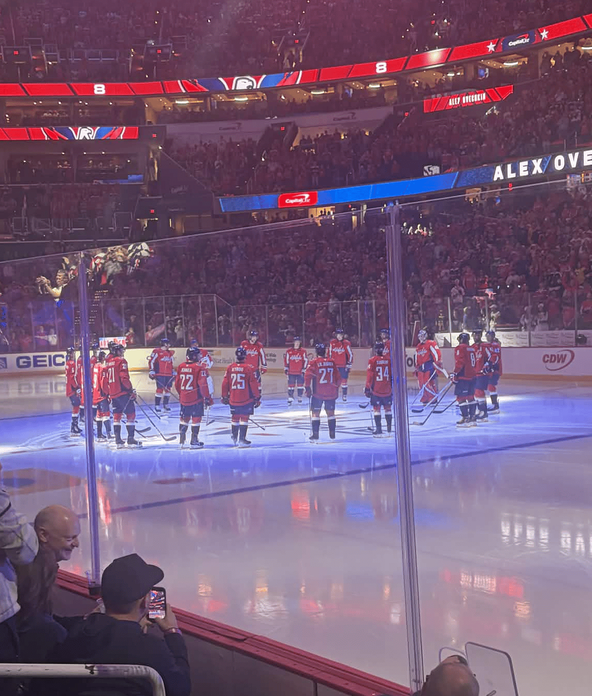

This picture was taken before the game started. It shows the capital roster for the game. This picture happened right after the announcing of the players and shows an important moment in Capitals history- Captain Alexander Ovechkins last home opener after 22 years.